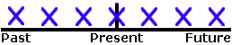

Present Continuous
{kind=link}
FORM
[am/is/are + present participle]
Examples:
- You are watching TV.
- Are you watching TV?
- You are not watching TV.
USE 1 Now

Use the Present Continuous with Normal Verbs to express the idea that something is happening now, at this very moment. It can also be used to show that something is not happening now.
Examples:
- You are learning English now.
- You are not swimming now.
- Are you sleeping?
- I am sitting.
- I am not standing.
- Is he sitting or standing?
- They are reading their books.
- They are not watching television.
- What are you doing?
- Why aren't you doing your homework?
USE 2 Longer Actions in Progress Now
In English, "now" can mean: this second, today, this month, this year, this century, and so on. Sometimes, we use the Present Continuous to say that we are in the process of doing a longer action which is in progress; however, we might not be doing it at this exact second.
Examples: (All of these sentences can be said while eating dinner in a restaurant.)
- I am studying to become a doctor.
- I am not studying to become a dentist.
- I am reading the book Tom Sawyer.
- I am not reading any books right now.
- Are you working on any special projects at work?
- Aren't you teaching at the university now?
USE 3 Near Future

Sometimes, speakers use the Present Continuous to indicate that something will or will not happen in the near future.
Examples:
- I am meeting some friends after work.
- I am not going to the party tonight.
- Is he visiting his parents next weekend?
- Isn't he coming with us tonight?
USE 4 Repetition and Irritation with "Always"

The Present Continuous with words such as "always" or "constantly" expresses the idea that something irritating or shocking often happens. Notice that the meaning is like Simple Present, but with negative emotion. Remember to put the words "always" or "constantly" between "be" and "verb+ing."
Examples:
- She is always coming to class late.
- He is constantly talking. I wish he would shut up.
- I don't like them because they are always complaining.
REMEMBER Non-Continuous Verbs/ Mixed Verbs
It is important to remember that Non-Continuous Verbs cannot be used in any continuous tenses. Also, certain non-continuous meanings for Mixed Verbs cannot be used in continuous tenses. Instead of using Present Continuous with these verbs, you must use Simple Present.
Examples:
- She is loving this chocolate ice cream. Not Correct
- She loves this chocolate ice cream. Correct
ADVERB PLACEMENT
The examples below show the placement for grammar adverbs such as: always, only, never, ever, still, just, etc.
Examples:
- You are still watching TV.
- Are you still watching TV?
ACTIVE / PASSIVE
Examples:
- Right now, Tom is writing the letter. Active
- Right now, the letter is being written by Tom. Passive
More About Active / Passive Forms
EXERCISES AND RELATED TOPICS
- Verb Tense Exercise 1 Simple Present and Present Continuous
- Verb Tense Exercise 2 Simple Present and Present Continuous
- Verb Tense Exercise 9 Present Continuous and Present Perfect Continuous
- Verb Tense Exercise 10 Present Continuous and Present Perfect Continuous
- Verb Tense Exercise 15 Tenses with durations
- Verb Tense Exercise 16 Present and Past Tenses with Non-Continuous Verbs
- Verb Tense Exercise 17 Present and Past Tense Review
- Verb Tense Exercise 24 Simple Present, Simple Future, Present Continuous, and Future Continuous
- Verb Tense Practice Test Cumulative Verb Tense Review
- Verb Tense Final Test Cumulative Verb Tense Review